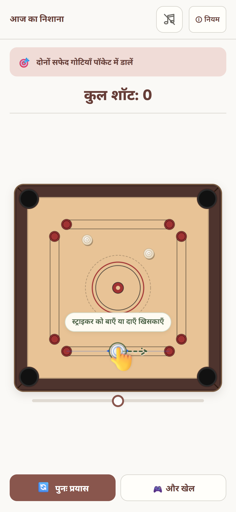

<!doctype html><html lang="en"><meta charset="utf-8"><title>Dainik Bhaskar — Five Games</title><style>
*{box-sizing:border-box}body{margin:0;width:1920px;height:1080px;background:#f7f5ef;color:#252621;font-family:'Segoe UI','Nirmala UI',sans-serif;overflow:hidden}.cover{height:100%;padding:54px 104px 38px;position:relative}.brand{font-size:26px;font-weight:650;display:flex;align-items:center;gap:17px}.brand:before{content:'';width:11px;height:31px;background:#d84631;border-radius:3px}.topline{display:flex;justify-content:space-between;align-items:center}.eyebrow{font-size:16px;color:#706e64;letter-spacing:2px;text-transform:uppercase}.heading{margin-top:39px;display:flex;align-items:end;justify-content:space-between;gap:30px}h1{font-size:68px;letter-spacing:-2.2px;font-weight:650;line-height:1.3;margin:0}h1 span{color:#a44331}.sub{font-size:23px;line-height:1.5;max-width:350px;margin:0 0 5px;color:#6d6a61}.rule{height:1px;background:#d8d4c8;margin-top:32px}.games{display:grid;grid-template-columns:repeat(5,1fr);gap:27px;margin-top:34px}.game{min-width:0}.screen{height:530px;display:flex;justify-content:center;align-items:center;border:1px solid #e0dcd1;border-radius:19px;background:var(--tint);padding:15px;box-shadow:0 9px 18px #443f3010}.screen img{height:100%;width:auto;border-radius:9px;box-shadow:0 4px 14px #3730241b}.name{font-size:24px;font-weight:700;margin-top:20px;color:var(--color)}.hindi{font-size:19px;margin-top:3px;color:#777268}.type{font-size:16px;margin-top:8px;color:#6d6a61}.bottom{position:absolute;bottom:35px;left:104px;right:104px;display:flex;justify-content:space-between;font-size:16px;color:#777268}.bottom strong{font-weight:600;color:#4a493f}
</style><main class="cover"><div class="topline"><div class="brand">Dainik Bhaskar / दैनिक भास्कर</div><div class="eyebrow">Daily games collection</div></div><div class="heading"><h1>Dainik Bhaskar Khel<br><span>दैनिक भास्कर खेल</span></h1><p class="sub">Five games. Five moods.<br>One daily play break.</p></div><div class="rule"></div><div class="games"><article class="game" style="--color:#685578;--tint:#6855780a"><div class="screen"></div><div class="name">Aaj Ka Shabd</div><div class="hindi">आज का शब्द</div><div class="type">Hindi word puzzle</div></article><article class="game" style="--color:#886735;--tint:#8867350a"><div class="screen"></div><div class="name">Aaj Ki Niti</div><div class="hindi">आज की नीति</div><div class="type">Thought & reflection</div></article><article class="game" style="--color:#365c49;--tint:#365c490a"><div class="screen"></div><div class="name">Aaj Ka Over</div><div class="hindi">आज का ओवर</div><div class="type">Six-ball cricket</div></article><article class="game" style="--color:#8f564c;--tint:#8f564c0a"><div class="screen"></div><div class="name">Aaj Ka Nishana</div><div class="hindi">आज का निशाना</div><div class="type">Carrom challenge</div></article><article class="game" style="--color:#556d91;--tint:#556d910a"><div class="screen"></div><div class="name">Aaj Ki Jodi</div><div class="hindi">आज की जोड़ी</div><div class="type">Find connections</div></article></div><footer class="bottom"><strong>A little play, every day. &nbsp;·&nbsp; थोड़ा खेल, हर रोज़।</strong><span>Playable prototype · Front-screen screenshots</span></footer></main></html>